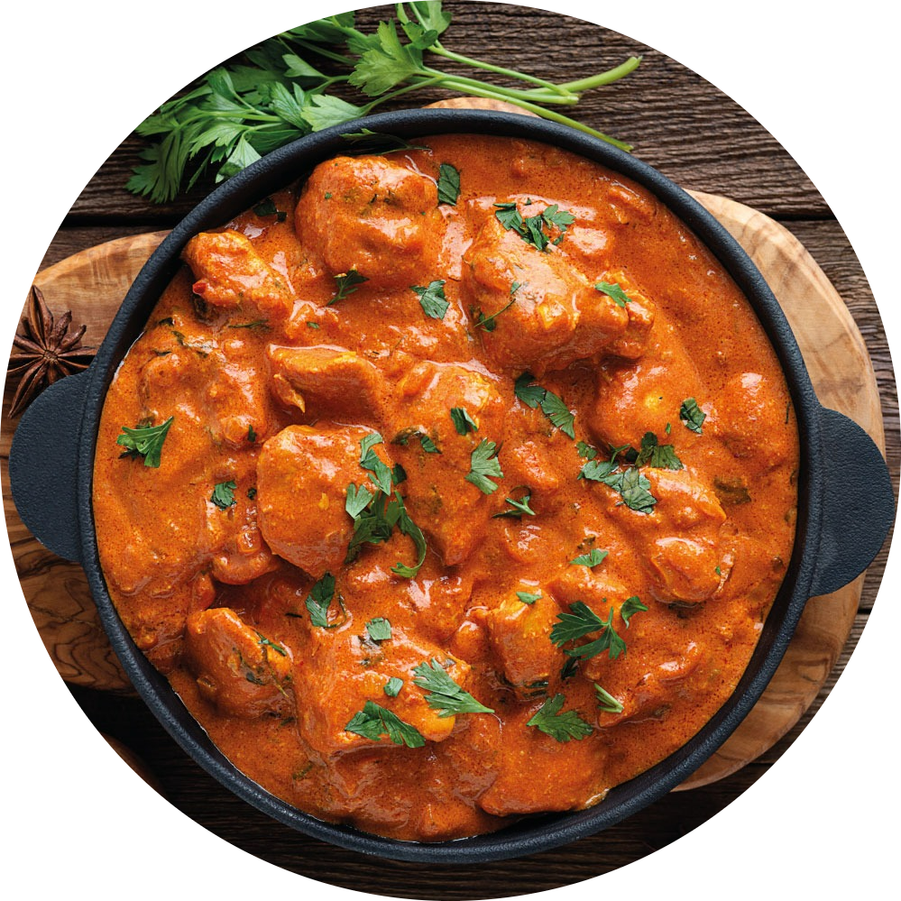
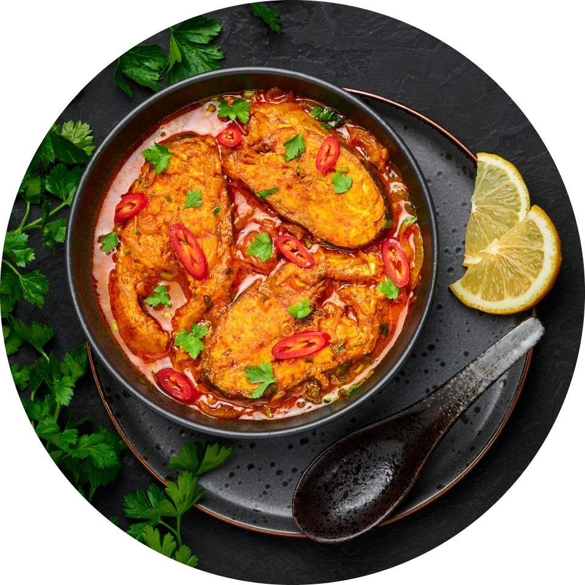
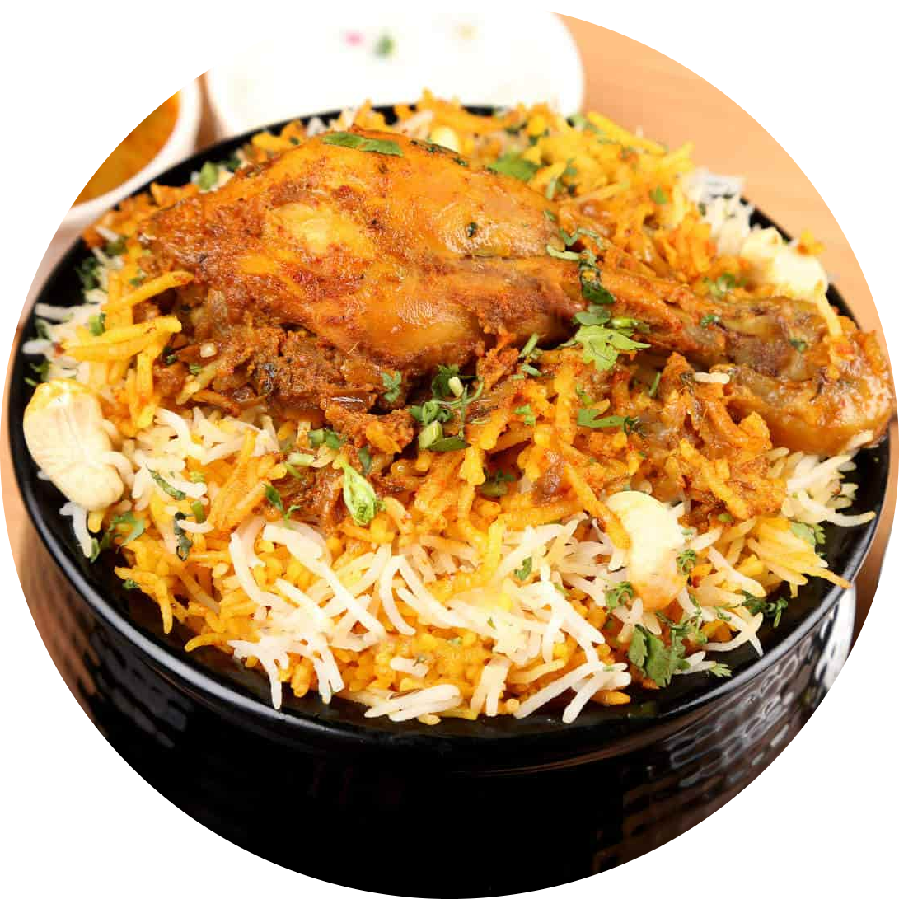
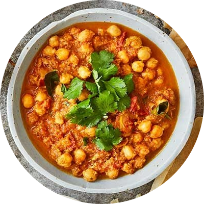

| Indian cuisine consists of a variety of regional and traditional cuisines native to India.Indian food is also heavily influenced by religion, in particular Hinduism and Islam,cultural choices and traditions.Historical events such as invasions, trade relations, and colonialism have played a role in introducing certain foods to this country. The Columbian discovery of the New World brought a number of new vegetables and fruit to India. A number of these such as potatoes, tomatoes, chillies, peanuts, and guava have become staples in many regions of India.Indian cuisine has shaped the history of international relations; the spice trade between India and Europe was the primary catalyst for Europe's Age of Discovery. Spices were bought from India and traded around Europe and Asia. Indian cuisine has influenced other cuisines across the world, especially those from Europe (especially Britain), the Middle East, Southern African, East Africa, Southeast Asia, North America, Mauritius, Fiji, Oceania, and the Caribbean. |
|  |
BUTTER CHICKENButter chicken originated from Northern India in 1948. Created by Kundan Lal Gujral, you may notice that Butter Chicken (known as murgh makhani — chicken with butter), is similar to British tikka masala. Prepared in a buttery gravy with the addition of cream gives the curry sauce a silky smooth rich texture. Most restaurants are known to add in copious amounts of butter, which as a result can leave you feeling bloated or ill from the slick of grease. However, we found while recipe testing that we prefer to start the sauce off in Ghee (clarified butter, or you can use a combination of half regular butter and half oil). Adding cream at the end of cooking provides enough of that richness you look for in an authentic butter chicken. Our less oily version leaves you feeling good and satisfied.. |
|  |
FISH CURRYThere are so many iterations of fish curry, you might get lost figuring out which is the best to try first. This traditional fish curry recipe is made with whole paanch phoran seeds and gets a bit of a kick from red chilies. The ingredients used here show a mix of both eastern and northern Indian culinary influences, so it's a good place to start before graduating to regional specialties like Goan or Mangalorean fish curries. Serve it on a bed of hot plain boiled rice. |
|  |
BIRYANIOne of the most royal delicacies that you can enjoy on any occasion or festival, Chicken Biryani is the epitome of a one-pot meal. Well, no one can resist the sight of the aromatic and delicious Chicken Biryani recipe. If you are also craving that, then you need not go anywhere as we have got this super-easy biryani recipe for you. So, what are you waiting for? Do try this delicious Chicken Biryani recipe and enjoy it with your loved ones. |
|  |
CHANA MASALAChana Masala is a popular Indian dish of white chickpeas in a spicy and tangy gravy. In North India, this dish is called ‘chole masala,’ or simply ‘chole’. No matter what you call it, this is a tasty vegetarian curry dish that you should definitely try making yourself!There are many variations of chickpea curries made in Indian cuisine, but I like this Punjabi chana recipe that I have shared here the most. It tastes like the chole you get in the streets of Delhi and Punjab! Few more delicious variations you can try are: |